Gold dots mark actual shared junctions. Crossing ink without a dot does not imply a material join. These are unfilled structural scaffolds.
One hundred lattices.
Edits you can inspect.
Withdraw a joint, shift a row, regroup lines as a box, replace a focus, or transform a repeated construction. Each result retains the actual earlier structures and explicit replacement evidence. Acceptance checks the chosen structural rules; whether a design feels satisfying remains a separate question.
Dashed rust: selected old focusGrey: carried pathsTeal: introduced result
All three local panels share one display scale. A new closed-box reading can have the same outline as the old independent lines while its publication roles and path structure change.
Your question / satisfying as a lattice?
Calculated rule reads · final design
Complexity is an authored-structure estimate, not a discovered conceptual vocabulary or beauty score. Crossing strands, disconnected motifs, shared boundary histories and overlapping projected support are disclosed separately. An undeclared contact is not silently accepted as a join.
Compare, choose and question.
Ratings stay in this browser when local storage is available. Export them to preserve a review for later comparison or training. No rating changes the native generator.
Unequal paired boxes · split 2

Ready for visual rating · complexity 1/5
AdmittedUnequal paired boxes · split 3
Ready for visual rating · complexity 1/5
AdmittedUnequal paired boxes · split 4
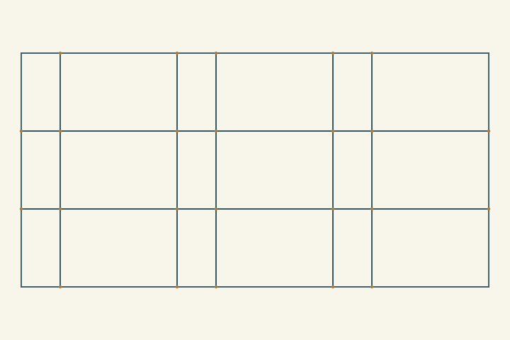
Ready for visual rating · complexity 1/5
AdmittedUnequal paired boxes · split 5

Ready for visual rating · complexity 1/5
AdmittedUnequal paired boxes · split 6
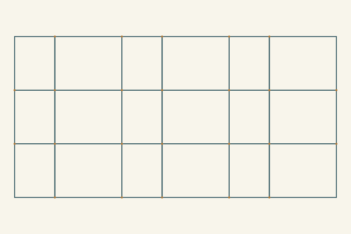
Ready for visual rating · complexity 1/5
AdmittedReleased running bond · slip 2

Ready for visual rating · complexity 1/5
AdmittedReleased running bond · slip 3

Ready for visual rating · complexity 1/5
AdmittedReleased running bond · slip 4
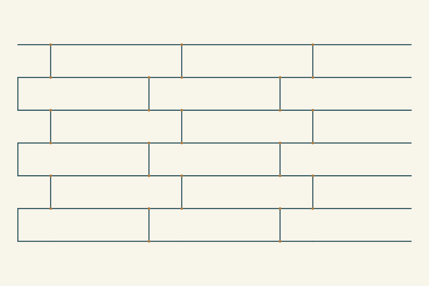
Ready for visual rating · complexity 1/5
AdmittedReleased running bond · slip 5
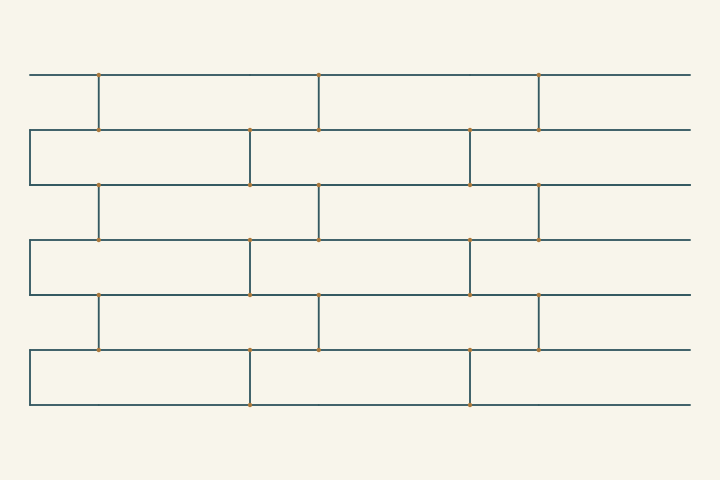
Ready for visual rating · complexity 1/5
AdmittedReleased running bond · slip 6
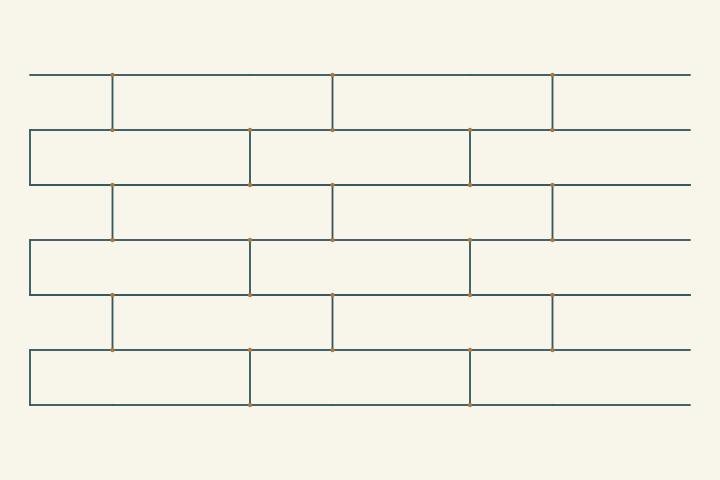
Ready for visual rating · complexity 1/5
AdmittedAlternating merged chambers · gap 2

Ready for visual rating · complexity 2/5
AdmittedAlternating merged chambers · gap 3

Ready for visual rating · complexity 2/5
AdmittedAlternating merged chambers · gap 4
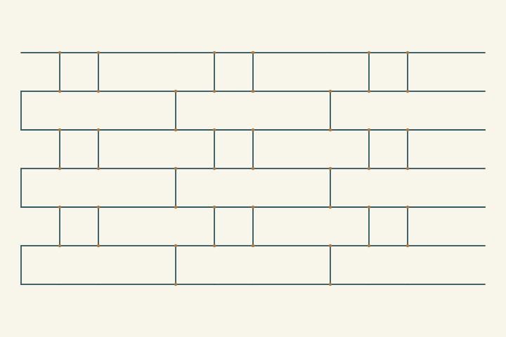
Ready for visual rating · complexity 2/5
AdmittedAlternating merged chambers · gap 5
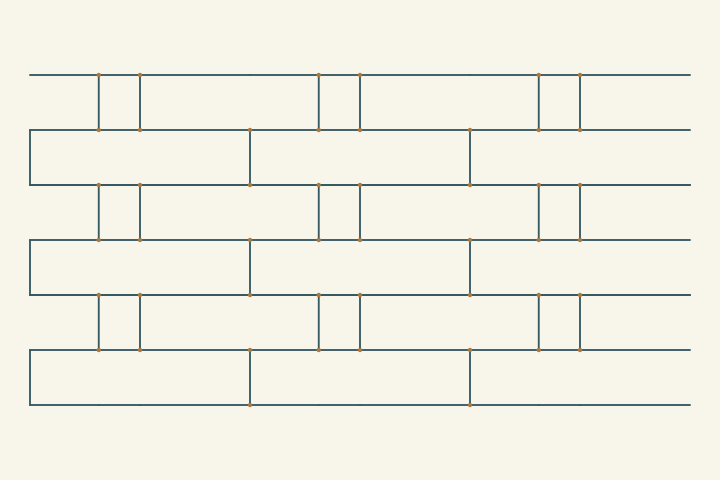
Ready for visual rating · complexity 2/5
AdmittedAlternating merged chambers · gap 6

Ready for visual rating · complexity 2/5
AdmittedAlternating diagonal chambers · inset 2

Ready for visual rating · complexity 3/5
AdmittedAlternating diagonal chambers · inset 3

Ready for visual rating · complexity 3/5
AdmittedAlternating diagonal chambers · inset 4

Ready for visual rating · complexity 3/5
AdmittedAlternating diagonal chambers · inset 5

Ready for visual rating · complexity 3/5
AdmittedAlternating diagonal chambers · inset 6
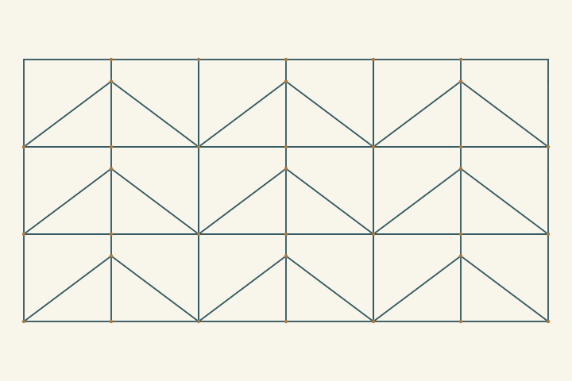
Ready for visual rating · complexity 3/5
AdmittedFour-way offset chamber · hub 2
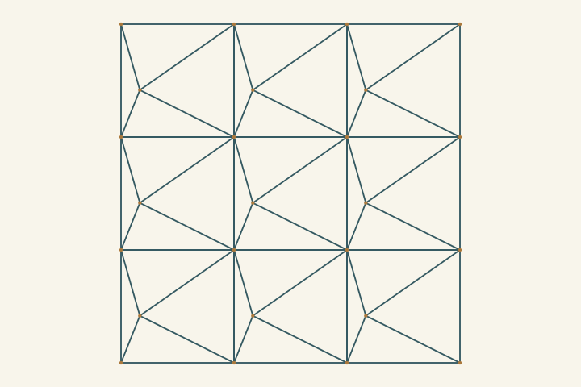
Ready for visual rating · complexity 3/5
AdmittedFour-way offset chamber · hub 3

Ready for visual rating · complexity 3/5
AdmittedFour-way offset chamber · hub 4

Ready for visual rating · complexity 3/5
AdmittedFour-way offset chamber · hub 5
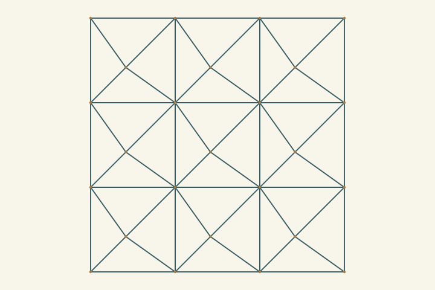
Ready for visual rating · complexity 3/5
AdmittedFour-way offset chamber · hub 6

Ready for visual rating · complexity 3/5
AdmittedOctagons and diamond gaps · cut 1

Ready for visual rating · complexity 1/5
AdmittedOctagons and diamond gaps · cut 2
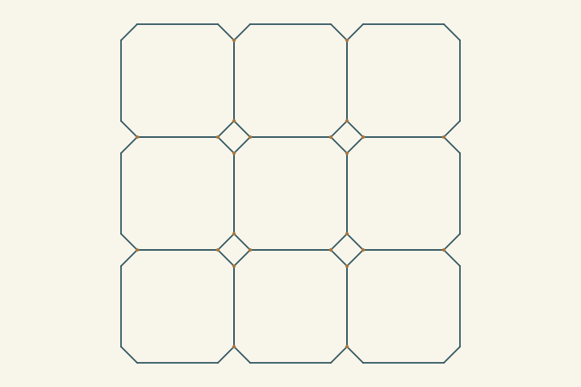
Ready for visual rating · complexity 1/5
AdmittedOctagons and diamond gaps · cut 3
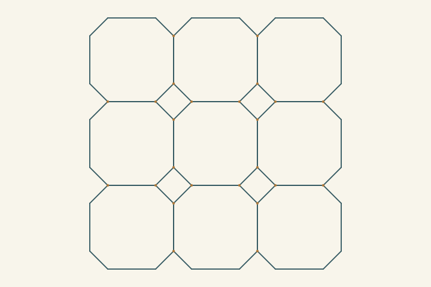
Ready for visual rating · complexity 1/5
AdmittedOctagons and diamond gaps · cut 4

Ready for visual rating · complexity 1/5
AdmittedOctagons and diamond gaps · cut 5
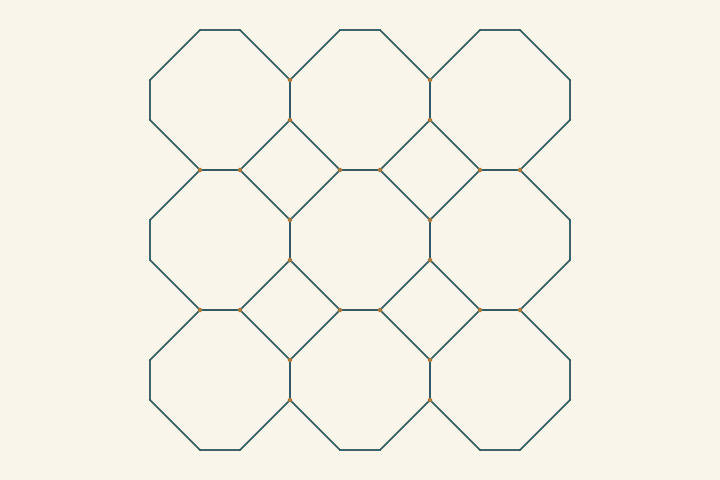
Ready for visual rating · complexity 1/5
AdmittedComplementary keyed tile · tooth 1

Ready for visual rating · complexity 3/5
AdmittedComplementary keyed tile · tooth 2
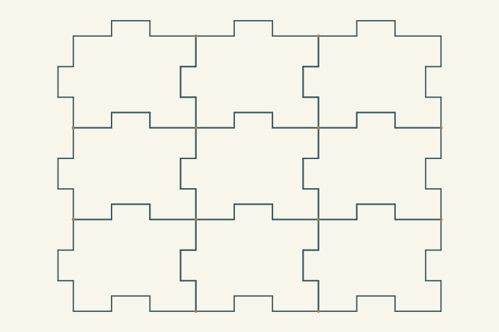
Ready for visual rating · complexity 3/5
AdmittedComplementary keyed tile · tooth 3

Ready for visual rating · complexity 3/5
AdmittedComplementary keyed tile · tooth 4
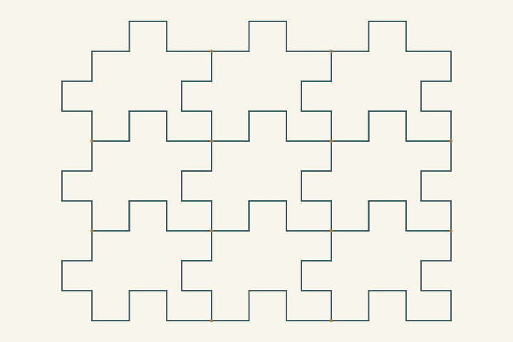
Ready for visual rating · complexity 3/5
AdmittedComplementary keyed tile · tooth 5
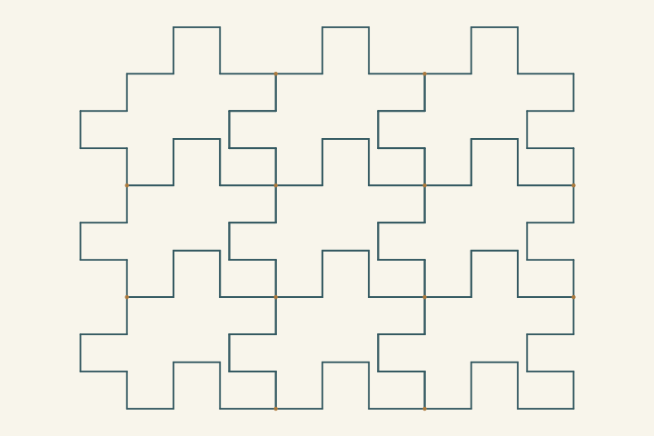
Ready for visual rating · complexity 3/5
AdmittedJoined zigzag courses · rise 1

Ready for visual rating · complexity 1/5
AdmittedJoined zigzag courses · rise 2
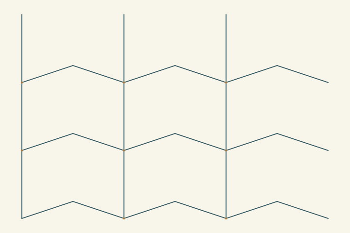
Ready for visual rating · complexity 1/5
AdmittedJoined zigzag courses · rise 3

Ready for visual rating · complexity 1/5
AdmittedJoined zigzag courses · rise 4
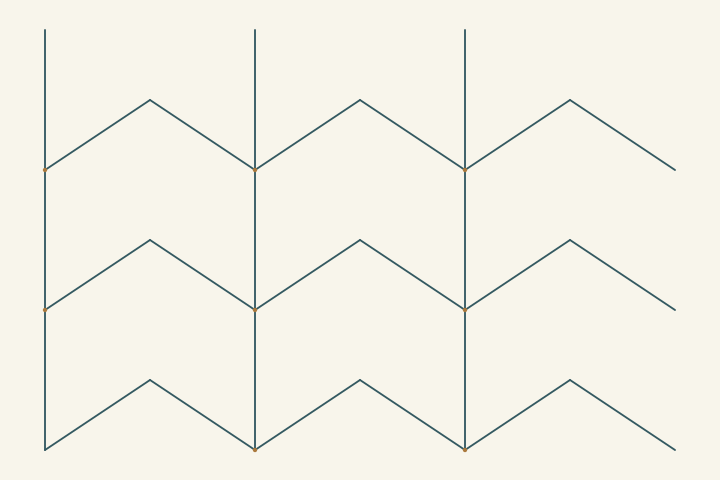
Ready for visual rating · complexity 1/5
AdmittedJoined zigzag courses · rise 5
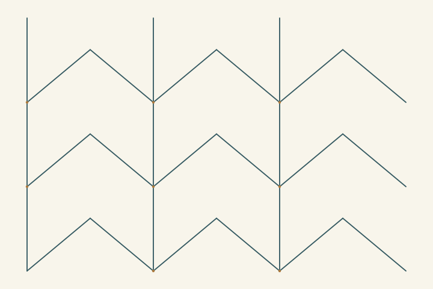
Ready for visual rating · complexity 1/5
AdmittedStepped interlocking courses · rise 1

Ready for visual rating · complexity 2/5
AdmittedStepped interlocking courses · rise 2
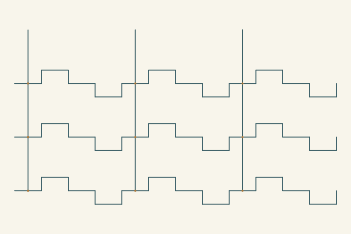
Ready for visual rating · complexity 2/5
AdmittedStepped interlocking courses · rise 3

Ready for visual rating · complexity 2/5
AdmittedStepped interlocking courses · rise 4
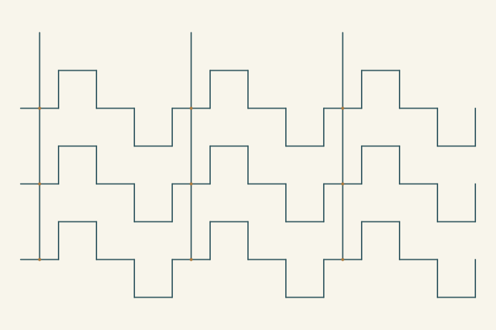
Ready for visual rating · complexity 2/5
AdmittedStepped interlocking courses · rise 5

Ready for visual rating · complexity 2/5
AdmittedSquare-wave chambers · plateau 2

Ready for visual rating · complexity 1/5
AdmittedSquare-wave chambers · plateau 3
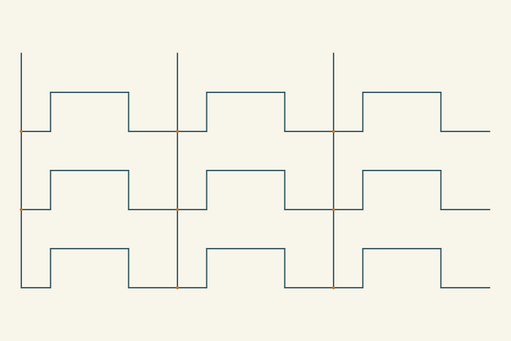
Ready for visual rating · complexity 1/5
AdmittedSquare-wave chambers · plateau 4

Ready for visual rating · complexity 1/5
AdmittedSquare-wave chambers · plateau 5
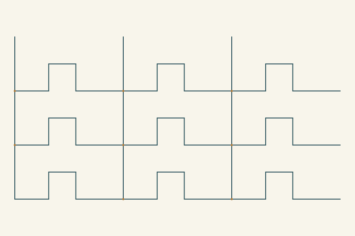
Ready for visual rating · complexity 1/5
AdmittedSquare-wave chambers · plateau 6

Ready for visual rating · complexity 1/5
AdmittedHerringbone domino assembly · aspect 2

Ready for visual rating · complexity 3/5
AdmittedHerringbone domino assembly · aspect 3
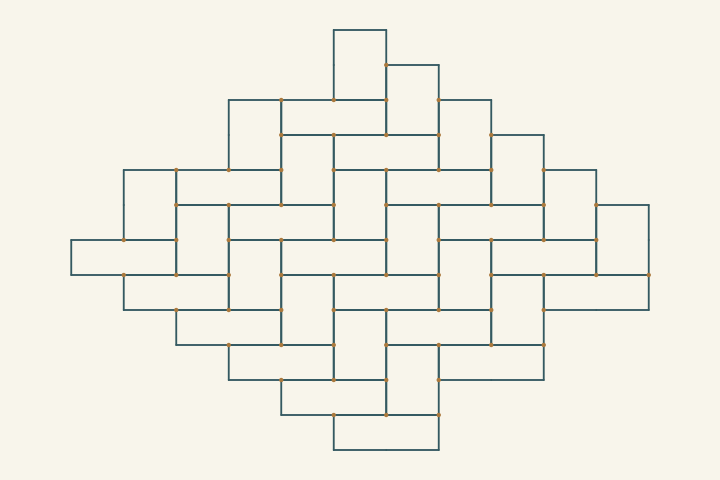
Ready for visual rating · complexity 3/5
AdmittedHerringbone domino assembly · aspect 4

Ready for visual rating · complexity 3/5
AdmittedHerringbone domino assembly · aspect 5
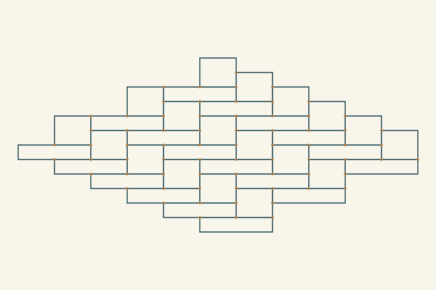
Ready for visual rating · complexity 3/5
AdmittedHerringbone domino assembly · aspect 6

Ready for visual rating · complexity 3/5
AdmittedSix-sided honeycomb · straight span 4

Ready for visual rating · complexity 1/5
AdmittedSix-sided honeycomb · straight span 5
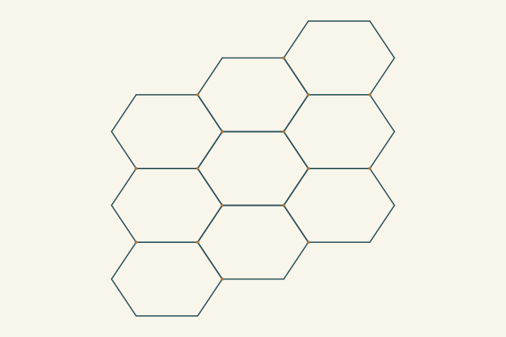
Ready for visual rating · complexity 1/5
AdmittedSix-sided honeycomb · straight span 6
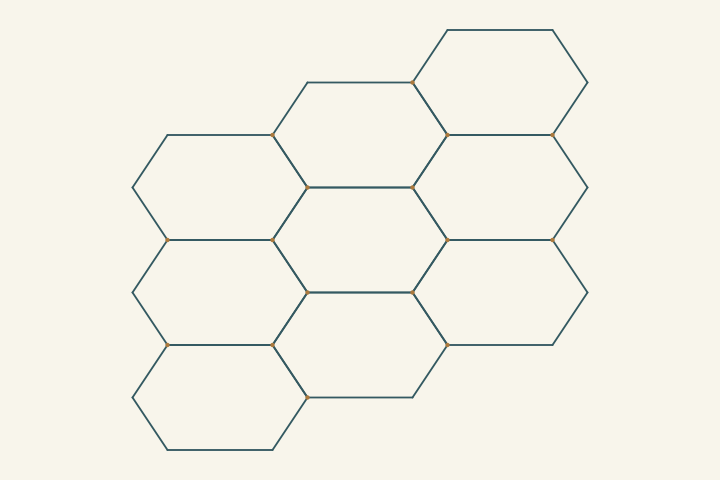
Ready for visual rating · complexity 1/5
AdmittedSix-sided honeycomb · straight span 7

Ready for visual rating · complexity 1/5
AdmittedSix-sided honeycomb · straight span 8
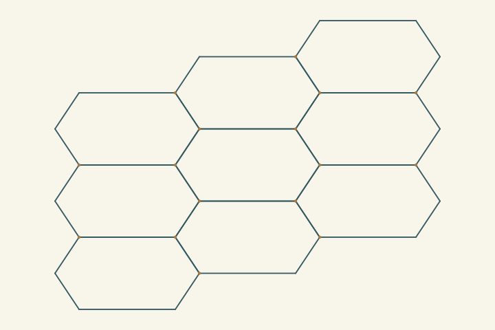
Ready for visual rating · complexity 1/5
AdmittedVertex-linked hexagons · flank 2
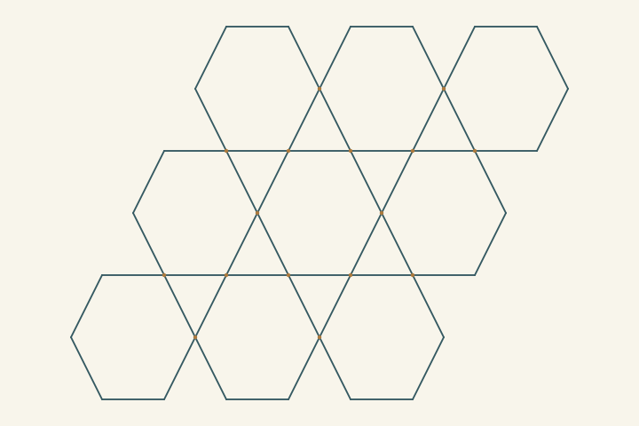
Ready for visual rating · complexity 1/5
AdmittedVertex-linked hexagons · flank 3
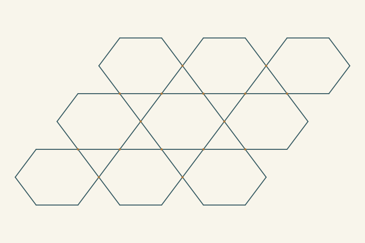
Ready for visual rating · complexity 1/5
AdmittedVertex-linked hexagons · flank 4

Ready for visual rating · complexity 1/5
AdmittedVertex-linked hexagons · flank 5

Ready for visual rating · complexity 1/5
AdmittedVertex-linked hexagons · flank 6

Ready for visual rating · complexity 1/5
AdmittedThree-part honeycomb chamber · centre 1
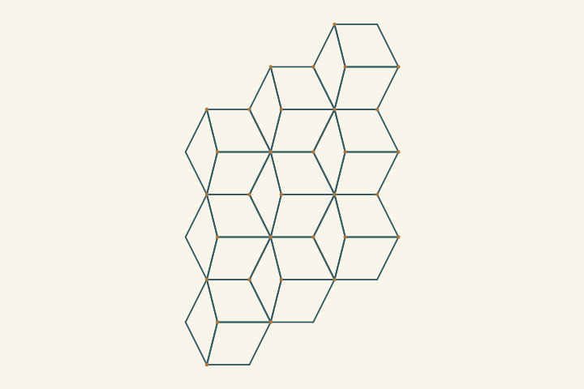
Ready for visual rating · complexity 3/5
AdmittedThree-part honeycomb chamber · centre 2

Ready for visual rating · complexity 3/5
AdmittedThree-part honeycomb chamber · centre 3
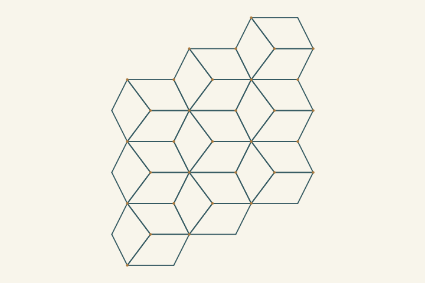
Ready for visual rating · complexity 3/5
AdmittedThree-part honeycomb chamber · centre 4

Ready for visual rating · complexity 3/5
AdmittedThree-part honeycomb chamber · centre 5

Ready for visual rating · complexity 3/5
AdmittedEight-point star network · neck 2
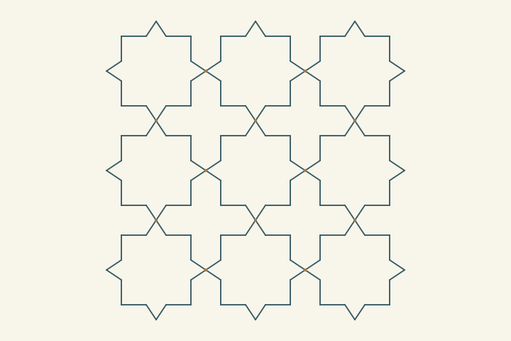
Ready for visual rating · complexity 2/5
AdmittedEight-point star network · neck 3

Ready for visual rating · complexity 2/5
AdmittedEight-point star network · neck 4
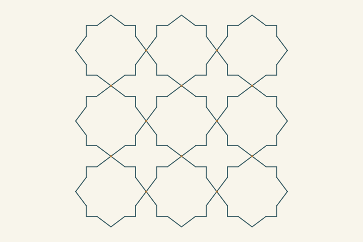
Ready for visual rating · complexity 2/5
AdmittedEight-point star network · neck 5

Ready for visual rating · complexity 2/5
AdmittedEight-point star network · neck 6

Ready for visual rating · complexity 2/5
AdmittedDetached opposed frets · return 3
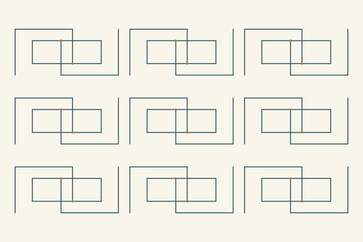
Crossing strands · complexity 2/5
AdmittedDetached opposed frets · return 4

Crossing strands · complexity 2/5
AdmittedDetached opposed frets · return 5

Crossing strands · complexity 2/5
AdmittedDetached opposed frets · return 6

Crossing strands · complexity 2/5
AdmittedDetached opposed frets · return 7

Crossing strands · complexity 2/5
AdmittedReturning oblique ribbon · lift 2

Ready for visual rating · complexity 2/5
AdmittedReturning oblique ribbon · lift 3

Ready for visual rating · complexity 2/5
AdmittedReturning oblique ribbon · lift 4
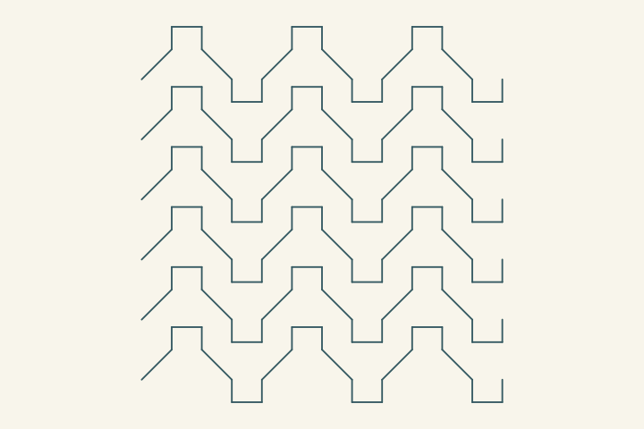
Ready for visual rating · complexity 2/5
AdmittedReturning oblique ribbon · lift 5

Ready for visual rating · complexity 2/5
AdmittedReturning oblique ribbon · lift 6

Ready for visual rating · complexity 2/5
AdmittedNested diamond chambers · inset reach 2

Ready for visual rating · complexity 4/5
AdmittedNested diamond chambers · inset reach 3
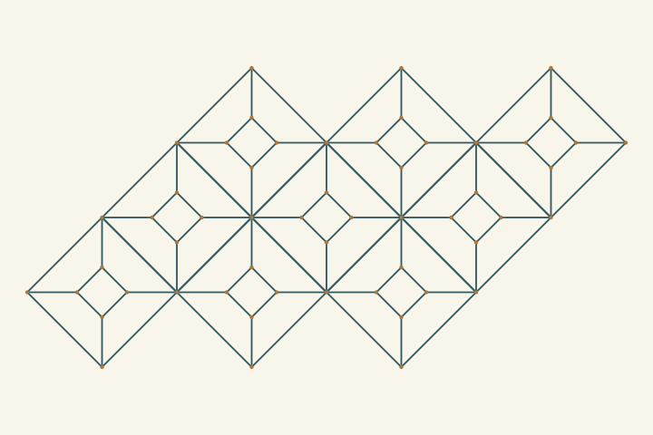
Ready for visual rating · complexity 4/5
AdmittedNested diamond chambers · inset reach 4

Ready for visual rating · complexity 4/5
AdmittedNested diamond chambers · inset reach 5

Ready for visual rating · complexity 4/5
AdmittedNested diamond chambers · inset reach 6
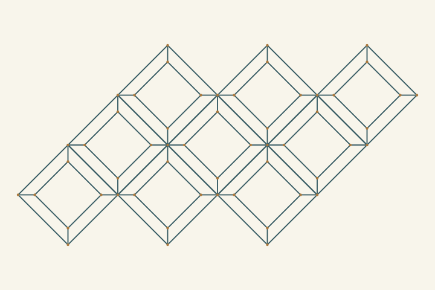
Ready for visual rating · complexity 4/5
AdmittedSix-way honeycomb fan · hub 1

Ready for visual rating · complexity 3/5
AdmittedSix-way honeycomb fan · hub 2
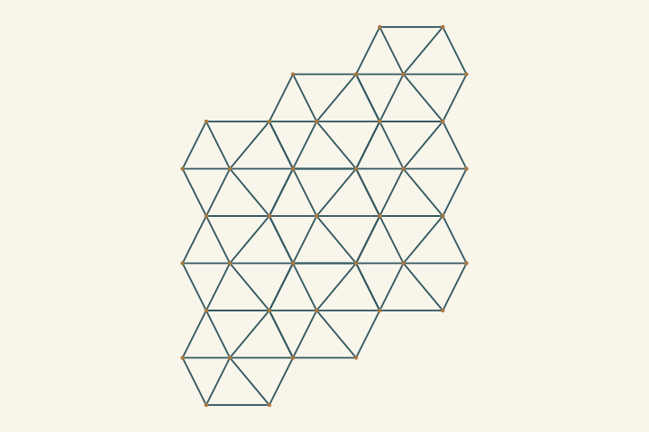
Ready for visual rating · complexity 3/5
AdmittedSix-way honeycomb fan · hub 3

Ready for visual rating · complexity 3/5
AdmittedSix-way honeycomb fan · hub 4
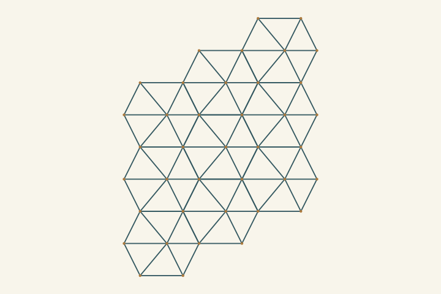
Ready for visual rating · complexity 3/5
AdmittedSix-way honeycomb fan · hub 5

Ready for visual rating · complexity 3/5
AdmittedAlternating basket rectangles · gap 2

Ready for visual rating · complexity 4/5
AdmittedAlternating basket rectangles · gap 3
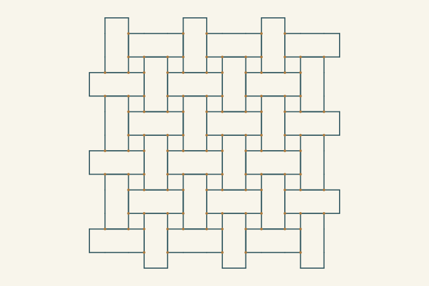
Ready for visual rating · complexity 4/5
AdmittedAlternating basket rectangles · gap 4

Ready for visual rating · complexity 4/5
AdmittedAlternating basket rectangles · gap 5
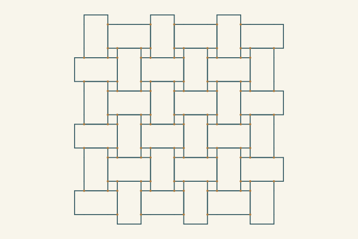
Ready for visual rating · complexity 4/5
AdmittedAlternating basket rectangles · gap 6
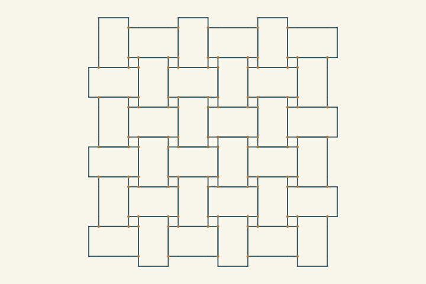
Ready for visual rating · complexity 4/5
AdmittedA plausible picture can still fail.

X01 · the same path goes out and directly back. Native retrace witness
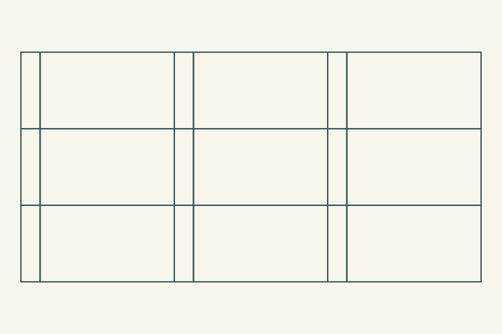
X02 · an exposed neighbouring-role offer has the wrong displacement. Native blocked witness
Two independent periodic directions, complete declared seams and no zero or retraced path chords are required here. These finite checks do not establish infinite tiling, occupied-area coverage or universal aesthetic merit. Additional rules can be tested against your ratings.